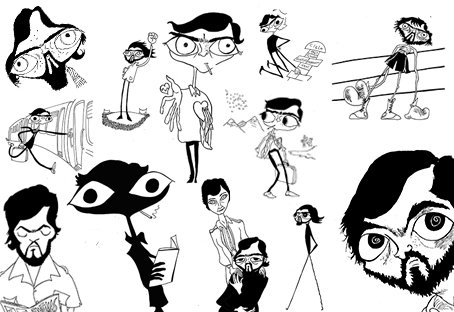

Julio Cortázar
Listado de sus obras:
Cuentos
- Bestiario, 1951
- Final del juego, 1956
- Las armas secretas, 1959
- Todos los fuegos el fuego, 1966
- Octaedro, 1974
- Alguien que anda por ahí, 1977
- Queremos tanto a Glenda, 1980
- Deshoras, 1982
- La otra orilla, 1995 (obra póstuma, concluida en 1945).
Prosas
- Historias de cronopios y de famas, 1962
- Un tal Lucas, 1979
Novelas
- Divertimento, 1949 (publicada póstumamente en 1986).
- El examen, 1950 (publicada póstumamente en 1986).
- Diario de Andrés Fava, 1950 (publicado póstumamente en 1986).
- Los premios, 1960
- Rayuela, 1963
- 62 Modelo para armar, 1986
- Libro de Manuel, 1973
Otros
- La vuelta al día en ochenta mundos, 1967
- Último round, 1969
- Territorios, 1978
- Los autonautas de la cosmopista, 1982
- Papeles inesperados, 1940-1984 (publicados póstumamente en 2009).
- Buenos Aires, Buenos Aires, 1967
- Viaje alrededor de una mesa, 1970
- Prosa del observatorio, 1972
- La casilla de los Morelli, 1973
- Fantomas contra los vampiros multinacionales, 1975
- Estrictamente no profesional, 1976
- Nicaragua tan violentamente dulce, 1983.
- Silvalandia, 1984
- Alto el Perú, 1984
- Imagen de John Keats, 1951 (obra póstuma).
Epistolario
- Correspondencia Cortázar-Dunlop-Monrós, 2009
- Cartas a los Jonquières, 2010
- Cartas 1. 1937 - 1954, 2012
- Cartas 2. 1955 - 1964, 2012
- Cartas 3. 1965 - 1968, 2012
- Cartas 4. 1969 - 1976, 2012
- Cartas 5. 1977 - 1984, 2012